Every Portrait Tells a Story
Tracing Gender Disparities in Paintings, 1400–2024
![]()
April 20, 2026


Roadmap
RQ: How are genders depicted in paintings through the history?
Theoretical Background
Data & Methods
Results: Tracing Gender Disparities in Paintings
Discussion & Conclusion
Theoretical Background
From Culture to Inequality*
Sociological theories long argued the cultural inequality
- Symbolic interactionsim perspective (Goffman 1979)
- Structuralism perspective (Bourdieu 1984)
- Cultural Boundaries-Inequality (Lamont, Beljean, and Clair 2014)
Feminist art historical studies observed gender inequality in cultures
- “Male Gaze” (Mulvey 1975 for film; Nochlin 1989 for art history)
- “Men act and women appear.” (Berger 1972)
Computational Analyses supported the ideas
Gender Inequality in Paintings
Why paintings are crucial for gender inequality?
With deliberation (Berger 1972) and long history (Aubert et al. 2014).
Large-scale inequality analyses are mainly upon “real”/“factual” images (Adukia et al. 2023; Guilbeault et al. 2024), with little focus on low-indexical images* (Peirce 1940).
*Indexicality: to what extent one symbol could link to the object
The distance between paintings and reality would be long, increasing the chances of amplifying inequality, through two pathways.
Gender Inequality in Paintings: Two Pathways
Inequality by Otherness (Goffman 1979):
- Women are more tiny and avoidant, deployed to underscore masculine power and strength rather than portrayed as autonomous subjects
- echoing the notion of “the second sex” (Beauvoir 1949)
Inequality by Objectification (Mulvey 1975)
- Female figures are objectified as idealized embodiments of beauty, rendered with exaggerated scale and frontal prominence to satisfy an implicitly masculine viewer
- examined by content analysis in art historical research (Berger 1972; Nochlin 1989)
Hypotheses: Gender Disparity in Paintings
H1: Female characters appear less frequently in paintings than male.
H2: Sizes of different genders in paintings are different.
H2.A: Female characters in the paintings are smaller than male characters in sizes.
H2.B: Female characters in the paintings are larger than male characters in sizes.H3: Postures of different genders in paintings are different.
H3.A: Female characters in the paintings are more oblique than male characters.
H3.B: Female characters in the paintings are more frontal than male characters.H4: Marginalized artists will depict female and male characters in a more equal manner, compared to the artists from dominant groups.
Data & Methods
WikiArt.org Dataset
A user-generated artwork database
“WikiArt already features some 250.000 artworks by 3.000 artists”
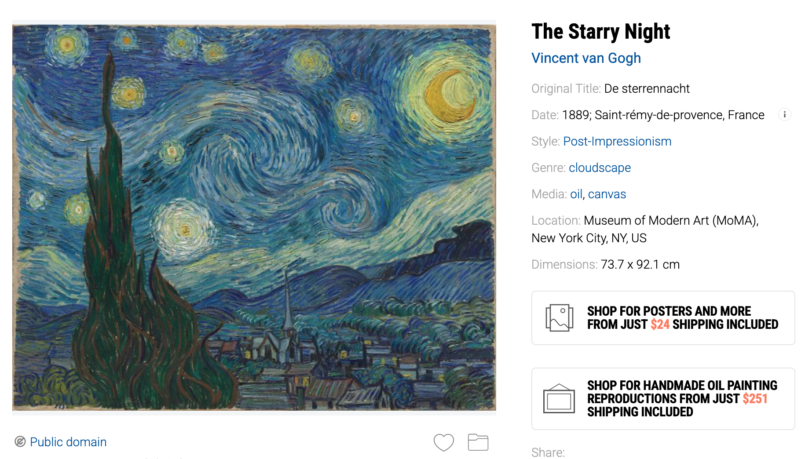
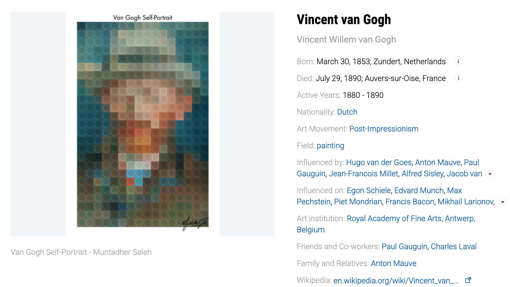
Artwork Information: Face Detection
Face Detection: RetinaFace (Deng et al. 2019) Face count trend
Gender Detection: DeepFace (Taigman et al. 2014)
Face Modeling: Constructing 3D models of faces, and comparing current face model to a neutral face model Example of facial recognition and detection
- To get the Yaw, Pitch, and Roll values of faces
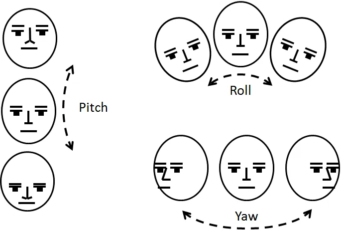
Artwork Information: Variables
Size: the ratio of the face area to the canvas area
Obliqueness: the factor score building upon yaw, pitch, and roll from the face modeling process (explaining 31% of the variance). Models upon raw values
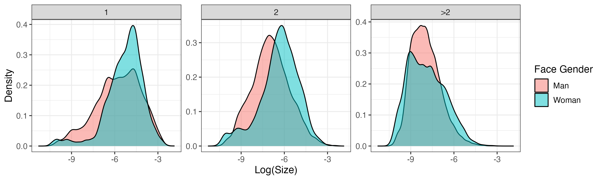
Artwork Information: Variables
Size: the ratio of the face area to the canvas area
Obliqueness: the factor score building upon yaw, pitch, and roll from the face modeling process (explaining 31% of the variance). Models upon raw values
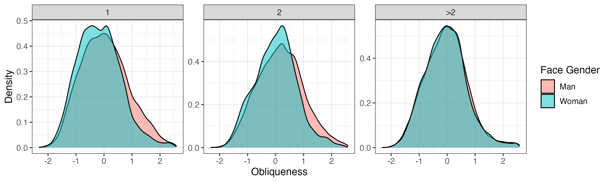
Artwork Information: Variables
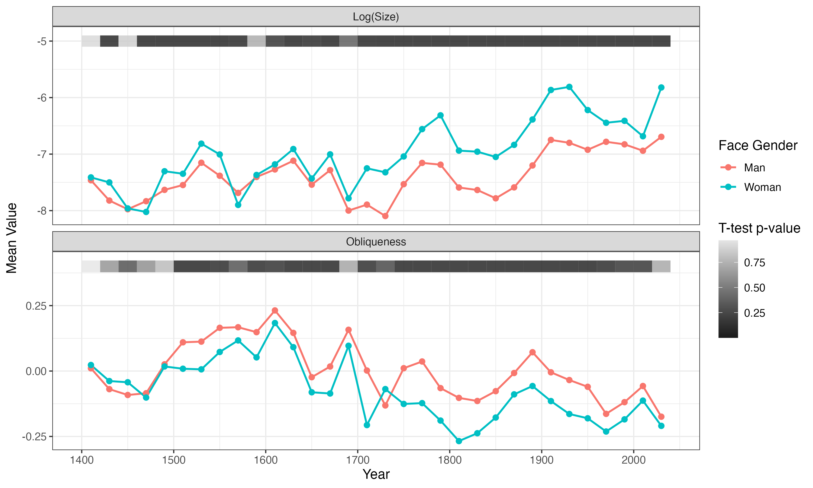
Artist Information: Variables
Extracted from Wikipedia texts of artists by GPT-4o-mini with few-shot chain-of-thought prompt
Gender: three categories of “female”, “male”, and “non-binary”.
Education: two categories of “self-taught” and “formal”.
Marginalized vs. dominant artists: Female vs. Male, Self-taught vs. formal
Regressions: Random Intercepts on Face Counts
Baseline Model:
\[ \begin{aligned} Y_{ij} \sim \beta_0 + \beta_1\, \text{FaceGender}_{ij} + \beta_2\, \text{ArtistInfo}_{j} + \sum_{t=1}^{T}\beta_t\, \text{Period}_{ij} \end{aligned} \]
\(\therefore\) Gender disparity \(\scriptsize \sim \beta_1\)
Period-interacted Model - Trend Analysis:
\[ Y_{ij} \sim \beta_0' + \beta_1'\, \text{FaceGender}_{ij} + \beta_2'\, \text{ArtistInfo}_{j} + \sum_{t=1}^{T}\beta_t'\, \text{Period}_{ij} \\ + \sum_{t=1}^{T}\beta_{t1}'\, \text{Period}_{ij} \times \text{FaceGender}_{ij} \]
\(\therefore\) Gender disparities for each period \(\scriptsize \sim \beta_{1t}' = \beta_1' + \beta_t'\)
Content Analysis upon Paintings*
Follow the idea of purposeful sampling (Palinkas et al. 2015)
Step 1. Maximum‑variation sampling: Finding the period at the turning point of the trend
Step 2. Paired sampling: Comparing between two paintings of different genders in that period
Considering saturation (Guest, Bunce, and Johnson 2006), I focused on less famous paintings with more gender differences, in case of introducing biases to the analysis.
Results
Gender Representations in Paintings

\(\to\) H1
At most, the female proportions in faces are around 30%.
More faces in the painting, less the female proportions in faces.
Gender Representations in Paintings
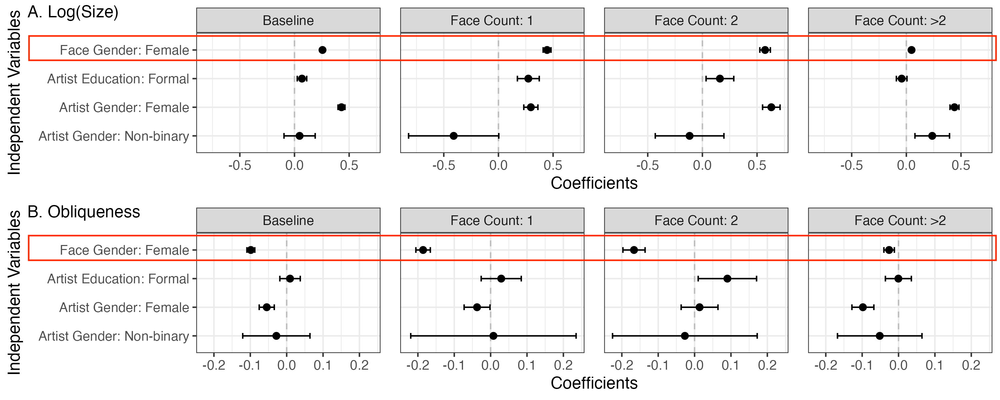
\(\to\) H2.B & H3.B: Female faces are persistently larger and frontal than male faces.
Gender Representations in Paintings
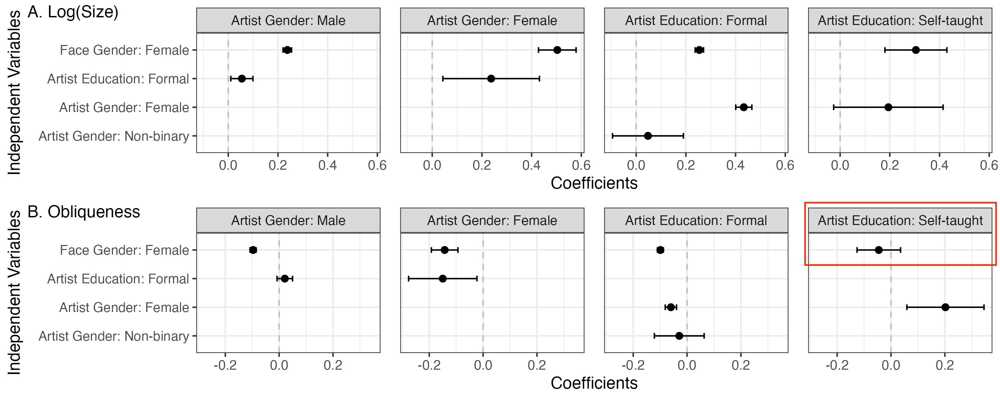
\(\to\) H4: Marginalized artists hardly bridge the gender gap, while self-taught artists do depict females more equally in obliqueness.
Tracing Gender Disparities in Paintings, 1400–2024

\(\to\) H2.B & H3.B
Overall, the gender disparities are persistent across time.
Period differences: mainly in early and late periods
Tracing Gender Disparities in Paintings, 1400–2024

\(\to\) H4
The marginalized artists bridged the gap between gendered figures earlier than dominant ones.
Tracing Gender Disparities in Paintings, 1400–2024*

Discussion & Conclusion
“Representation of the world, like the world itself, is the work of men; they describe it from their own point of view, which they confuse with absolute truth.”
- The Second Sex (1949), by Simone de Beauvoir
Summary of Results
| Results | Hypothesis | Theory |
|---|---|---|
| Female faces are fewer than male ones. | H1 | / |
| Female faces are larger than male ones. | H2.B | Objectification |
| Female faces are more frontal than male ones. | H3.B | Objectification |
| Marginalized artists are similar to dominant ones. | H4 | Gate-keeping |
| Marginalized artists bridged the gap earlier. | H4 | Embodiment |
Implications
Symbolic Annihilation and Cultural Reproduction:
- Females are culturally annihilated in visual materials (Tuchman 2000; O’Kelly 1983; Adukia et al. 2023; Weitzman et al. 1972).
- Paintings reproducing gender inequality (Butler 1990), even by marginalized artists (Placáková 2024).
Inequality by Objectification:
- Paintings follow “objectification” (Berger 1972; Nochlin 1989).
- Mirroring the contradictory phenomenon that the number of female artists and female characters are unproportional (Guerrilla Girls 1989; McShine 1985)
Implications
Scaling Visual Analysis:
- How computational measurement (for example 3D modeling of faces) could be utilized to large-scale visual materials.
- extending the analysis towards fine art from other visual materials (Adukia et al. 2023; Guilbeault et al. 2024; Mazières, Menezes, and Roth 2021)
Limitations
Data biases:
- WikiArt dataset may be biased towards certain periods.
Face detection:
- Face detection algorithm could lean to contemporary photographic dataset.
Wikipedia extraction:
- LLM extraction is efficient, but may introduce errors.
Thanks for listening!
References
Appendix 1. Face Detection Examples
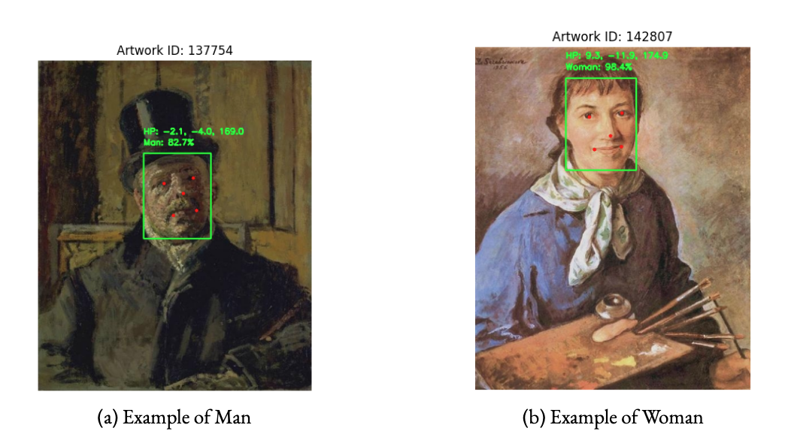
Appendix 2. Face Count Trend
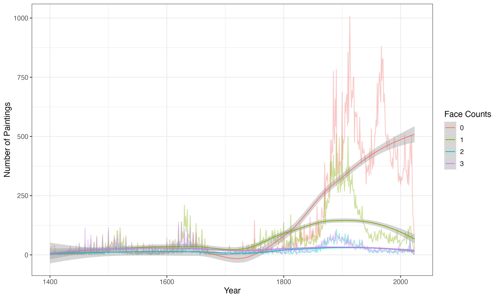
Appendix 3. Models upon Size, Yaw, Pitch, Roll
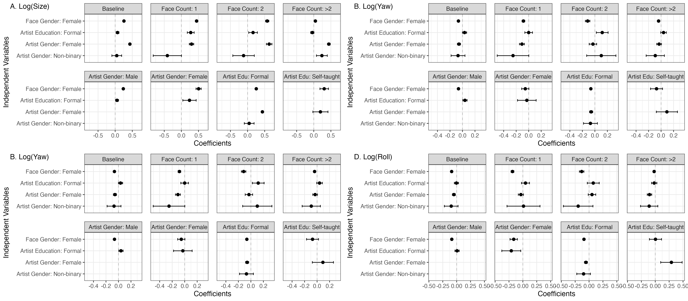